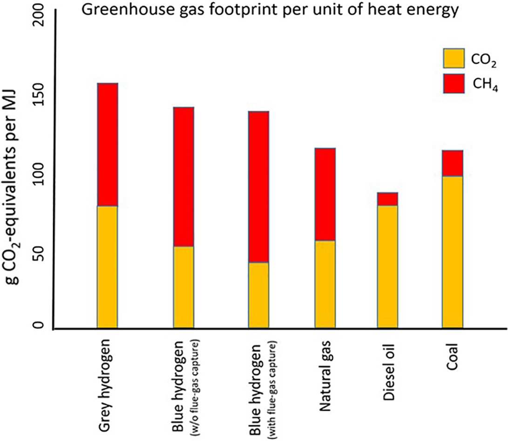

【工業】【能源】再談氫經濟
2020-02-14 01:07:00
原文网址：https://blog.udn.com/MengyuanWang/131731312
我在五年之前，寫了《永遠的未來技術》一文，討論兩種被廣汎吹捧的新能源，也就是核聚變和氫經濟。當時我下的結論，是核聚變發電和氫動力汽車，都是不切實際的妄想，要在本世紀有經濟性地普遍部署是“不可能的”（在我的詞匯裏指低於0.01%的成功機率；不過中國現在所專注的Tokamak設計，其實成功可能性只有10^-10，德國的Stellarator才對應著10^-5）。五年後復盤，當年為Toyota Mirai鼓噪造勢的人早已噤聲；核聚變雖然仍舊吃香，但這是因爲它每一代實驗的周期長達30年（例如ITER計劃始於2007年，到2020年預計全規模實驗開始的時間已經被延到2035年），要等待真相大白於世，只怕我們這一輩人早都死光了。這正是Goebbels所說的，謊言越大越難揭發。反過來考慮，核聚變至少還建立在真正的科學理論基礎之上，投進去的錢也主要留在國内，所以遠遠沒有大對撞機那麽離譜，我個人力量有限，還是專注在揭發後者這個真正誤國誤民的大忽悠上吧。
最近幾周，又有了新一批鼓吹氫經濟的科普文章在表面上無關聯的幾個西方媒體相繼刊出（例如https://earther.gizmodo.com/europe-has-a-130-billion-natural-gas-problem-1841448077 ，https://oilprice.com/Alternative-Energy/Fuel-Cells/Green-Hydrogen-Is-Right-Around-The-Corner.html# 和https://www.forbes.com/sites/patsapinsley/2020/02/11/its-time-to-talk-hydrogen/#196f8756470b ），這是有財團勢力在背後推動才會出現的現象，不過這次倒不是Toyota或其他汽車公司要推銷新型的氫動力汽車；事實上過去五年中，汽車工業界已經放棄了氫動力和柴油，準備在2030年之前把應對環保壓力的重點轉移到電動汽車上。這一波氫經濟公關要宣傳的，其實是我在《永遠的未來技術》的正文和留言討論中簡單提到的（例如這句話：“用氫來儲能，以備尖峰用電時發電，或許是可行的”），工業化集中處理氫氣，作爲電網儲能的一部分，所以它並不是無的放矢的吹噓。我預期在未來幾年，這方面的科普宣傳和投資計劃都會持續出臺，所以在這裏先向讀者解釋清楚此事背後的科技、經濟和商業考慮。
我們先回顧一下，氫能源在工業應用上的短處和困難。這其中最嚴重的，當然是我在《永遠的未來技術》裏特別强調的安全性問題。氫氣非常容易爆炸，天然氣與之相比都溫和得不得了，要在城市裏普建加氫站實在不是明智之舉；即使爲了政治或商業迷思而硬幹，也必然會在幾年内被現實打臉。事實上，當前世界只有極少數的消費者加氫站，但是已經不斷發生嚴重的爆炸案；只看去年，就有六月在美國加州Santa Clara和挪威的Oslo一連爆了兩次，到了九月南韓的五個站中也爆了一個。這樣的出事機率是每年百分之幾的級別，而且還是在大公司不惜工本來直營的背景下發生的；如果加氫站如同美國的加油站一樣，隨便哪一個個體戶都可以開，那麽其危險程度可想而知。
氫的危險性太高，不適合直接面向消費者，所以只能考慮工業上由專業人員集中管理的可能應用。但是現代石化工業已經有百年歷史，規模龐大、種類繁多，爲什麽氫氣始終沒有取得一席之地呢？這是因爲氫本身還有好幾個特性，使得生產、儲存、運輸和使用都很困難。
首先，在地球表面常見的分子之中，氫是除了氦之外尺寸最小的。工業上一般應用的金屬材料，包括碳鋼、不鏽鋼、鋁合金、鈦合金、鎳合金和鋯合金，晶格間隙都容許氫分子的滲透，很快就會造成機械性能的嚴重退化，這叫做“氫脆”“Hydrogen Embrittlement”。另一方面，氫氣管道的密封隔離也格外困難；再加上氫氣密度太低，儲存起來不是極高壓就是極低溫，使得如氫氧火箭發動機的設計與製造上就是麻煩不斷。在航天這種高價值特殊用途還可以勉强忍受（即使如此，甲烷燃料火箭仍然是新一代的研發熱點），在一般能源供應上，氫的儲存筒和運輸管道，規格和價位都遠超天然氣，也就沒有經濟上的競爭力。
其次，許多科普文章喜歡吹捧的PEM（Proton Exchange Membrane，質子交換膜）燃料電池，其實非常地不實用。經過幾十年的研究發展，雖然名義上有60%的效率，至今仍然無法可靠地將壽命延長到超過幾個月的連續使用（參見https://www.intechopen.com/books/proton-exchange-membrane-fuel-cell/degradation-in-pem-fuel-cells-and-mitigation-strategies-using-system-design-and-control），所以基本也沒有什麽經濟性可言。德國勉强把它用在212型潛艇上，但這又是因爲特殊軍事用途對高昂成本的承受力比民用工業高得多，潛艇的AIP系統也不須要365天24小時持續運作。
第三，氫氣生產和使用過程的效率低得驚人。直接用水電解的話，陰極、陽極、電解液都很容易失效，以致於目前能工業化大量持續生產的最高能量效率只有25%！做爲對照，大型工業馬達在電能和動能之間的轉換效率已經達到99%以上。所以現在石化工業遇到非得用上氫氣的化學反應時，反而是采用天然氣做原料，通過效率大約70%的Steam Reforming Process（蒸汽重整）來產製氫氣；這也就是人類目前要生產氫氣最具經濟性的方法。接下來如果要長期儲存，壓縮氫氣會損失15%的能量，使用時減壓釋放再損失5%，這樣一來，就算未來有了技術突破，能解決PEM燃料電池的耐用性問題，從生產-儲存-釋放-發電的氫氣發電總效率也不會高於70%*85%*95%*60%=34%，這還不如小汽車上燒汽油的内燃機，更別提直接燒天然氣的聯合循環燃氣渦輪（Combined Cycle Gas Turbine，CCGT）發電站早已經有實用化的64%總效率。
既然氫能源技術的缺陷如此明顯而嚴重，爲什麽會有人想推動建立它的產業生態呢？這其實有其特殊的時代背景，倒不算是100%的忽悠。我們先從臺面上的公開因素談起，也就是因應氣候變化而必須減少使用化石燃料來發電的全球共識。
在2015年巴黎協約訂定有關削減碳排放的議程之中，歐盟的態度最爲積極，采用可再生能源來取代核電、煤電和天然氣電廠的計劃也最爲激進。然而如同我在《台灣能源供應的未來》的正文和留言欄中解釋過的，風能和太陽能這兩種主要的可再生能源雖然在價格上已經有競爭力，但是它們看天吃飯、時有時無的特性，卻代表著先天不可能獨力滿足所有的電力需求。晝夜之間的變化，還可以靠將大型電池組聯入電網來解決；冬夏之間的季節差異，就需要能量密度更高、長期儲存更方便可靠的技術。所以在最近幾年，各式各樣的腦洞大開，如大型升降機或山頂蓄水池等等，居然都能得到投資。但是這些儲存物理位能的辦法，實用性明顯地可疑，真正靠譜的還是化學能。
照理説，天然氣目前供過於求，價格很便宜，碳排放也顯著低於煤電。雖然甲烷泄露（Methane Emission Slippage）是個大問題，而且向來沒有精確可靠的統計或監管（參見前文《統計與謊言》以及https://www.euractiv.com/section/energy-environment/interview/us-scientist-methane-leakage-reports-have-an-inherent-low-bias/ ），但是在2020年一月底，歐盟總算決定要動手彌補（參見https://www.euractiv.com/section/energy-environment/news/eu-working-on-plans-to-expose-climate-impact-of-natural-gas/1428789/ ），首先建立甲烷檢測體系，包括專職的監視衛星，十年之内可能會杜絕大部分的隨意工業排放。再加上天然氣發電效率高、啓動快、基礎設施完備、技術成熟，實在是最佳的調峰和尖載（Load Following/Peaking Power）電力來源。
但是歐洲白左文化盛行，不講究理性權衡折衷；在他們眼中，燒天然氣也會產生CO2，那麽就只能是中短期内的過渡辦法，到了2050年全電網都必須是100%的可再生能源。美國加州也在2018年提出以2045年為最後期限的計劃（模仿夏威夷的前例；但是加州比夏威夷要大得多了，執行起來的現實問題也就更困難許多），MIT隨即發表論文（參見https://www.technologyreview.com/s/611987/how-california-could-affordably-reach-100-percent-clean-electricity/ ）指出硬要追求100%的可再生電力來源，會比以80%為目標貴上許多倍（“…costs begin to rise exponentially once the share of variable renewables crosses roughly the 80 percent threshold”）。這是因爲不但可再生能源的供應有很大的不可控波動，電力需求曲綫本身也有它自己的各種規律和隨機起伏，如果硬是要求可再生能源的低谷也要高過電力需求的高峰，那麽就必須有數十倍於長期平均值的應急供應量。由於電池的能量密度很低、壽命又短，所以即使大規模應用在電網儲能上，仍然沒有經濟上可接受的解決方案。
不過MIT的論文假設了儲能技術不會有突破性的進展，於是很多人在這裏看出商機。既然前面提到的儲存物理位能的辦法，明顯地不實用，自然有人開始檢視各種化學能儲存方案。最近冒出來好幾篇試圖直接用CO2合成甲烷的論文，也是這個背景下的產物，但這比物理位能還要更不切實際；真正在乎經濟性和實用性的大企業，最後還是覺得氫氣是目前對自己（亦即石油財團）已知最不壞的選項。
他們會得到這個結論，有以下的一些考慮：
1）電解得氫和燃料電池的耐用性和效率問題，相對來説還算是容易解決的。花10-20年來做研發，把電解的效率提高到60%，燃料電池的壽命提升到3-5年，成功的機率在50%上下，遠高於學術界和創投界的那些狂想。他們甚至已經説服政府掏腰包來做這些研究，例如英國的Gigastack計劃。
2）MIT論文論證了這些尖載電力需求的頻率，發現以年度總發電量來計算，是很小的百分比（亦即x%，x<10），那麽氫能源循環的效率雖低（假設60%*85%*95%*60%=29%），浪費的仍然只是百分之幾（x%*（100% 29="" -1="" 2="" 44="" x="" 25="" core="" competence="" p="">
瞭解了這些背景資訊，我們就能正確解讀最近的一些新發展。例如法國的Engie公司剛剛投資在Cappelle-la-Grande村，對100家用戶提供混入20%氫氣的天然氣，而這些氫氣來自特別安裝在當地的小型電解製氫設備。這樣的系統毫無經濟效益可言，除了公關價值之外，其實是用來實驗既有天然氣管道所能承受混入氫氣百分比的極限（似乎是25%）。Engie的資產包括了法國的天然氣管道系統，所以這是他們關心的議題之一。
至於不受白左思想控制的經濟體系，其實可以直接忽略最新這一波歐美能源公司有關氫能源的公關推銷。用天然氣、核電和電池儲能來輔助風能和太陽能發電，是遠遠效率最高、經濟性最好的低碳能源方案；投入大量人力、物力、財力去追求100%的零碳指標，不但是無意義的虛榮，而且會造成很大的浪費。
【後註一】有讀者私下問一個問題，我覺得可供大家參考：《問》孟源先生您好！想再請教一些您有關核聚變的問題，希望有空時不吝解惑。現在中國大力推進的以託卡馬克裝置為主體框架的核聚變研究，我了解它是採用高能微波加熱反應物到等離子態、用強環形磁場來實現約束高溫等離子體在一定空間，那麼實現聚變反應是在同一空間內還是導入另一處空間？聚變後的高溫氦核能量又是考慮採用什麼方式轉化利用？這種裝置要具備實用價值除了可控以外還應該要有一定的較高密度的正向能量輸出，這其中主要的工程技術難點是什麼？
《答》Tokamak原本是蘇聯的設計，是對美國的Stellarator的一個簡化修正。其實Stellarator才是一般人想象的，用強磁場把高溫等離子體穩定地局限在環狀空腔之中，讓它持續進行聚變。這裏的重點，是“穩定”兩字；等離子體在環形强磁場下，並不會乖乖地轉圈圈，而會自然地發生扭曲和紊流，所以美國人做不出來。然後蘇聯的研究人員說，我們在等離子體裏故意產生電流，電流產生次級磁場，就能暫時抑制紊流，結果比美國人好了兩三個數量級，於是大家一窩蜂地跟上去，成爲世界的主流設計。但是Tokamak這個花樣，本身其實並非真的穩定（專業術語是它有MagnetoHydroDynamic Instabilities，MHD不穩定），只不過是把等離子體崩潰的時間減緩，所以像是ITER和後續設計要發電，必須是脈衝式的，也就是等離子體被注入、加熱、聚變、崩潰、排出的循環必須以每隔一段時間（ITER號稱400秒）重來一次不斷進行，就像内燃機的氣缸那樣。換句話說，不但是佔聚變產能80%的14MeV中子，全部會打在内腔壁上，幾億度的等離子體也是每一輪回都把絕大部分能量釋放到内腔壁。所以客觀的評估（例如我的），早早就可以確定，不論投入多少錢和時間，也不可能製造出能承受60年（目前核裂變反應爐的壽命）這樣打擊的内腔壁材料，因爲連能承受10個輪回的，都遠超人類現有的材料技術。
近年計算機能力持續進步，有科學家回頭去看Stellarator内的等離子體紊流現象，發現超級計算機可以做出精確的預測，那麽腔室該有的奇異形狀就能被精確算出，於是就有人（主要在德國）開始建設大型的Stellarator實驗反應器，發現可以以低一個數量級的尺寸/費用，達到新型Tokamak的聚變指標；因爲幾乎沒有MHD不穩定性，它在等離子體的壽命上，也有很大的優勢。不過高能中子的遮擋吸收問題，仍然無解，這也就是五年前我的文章《永遠的未來技術》只抓高能中子一個問題來討論的原因。
其實另外還有一個無解的普世問題，就是高溫等離子體處於熱平衡，所以個別離子的能量必須遵守波茲曼分佈，有快有慢，那麽用來局限等離子體的强磁場只能針對離子的平均速度來設計，最快和最慢的離子必然會脫離“磁場瓶”“Magnetic Bottle”而撞上内腔壁，這是Stellarator也無法解決的（這些問題叫做“Plasma Transport”，我只簡單描述了其中的一種）。所以你問的那些工程問題，答案都是“無解”、“不知道”和“不可能”。Tokamak沒有“主要”的工程技術難題，而是每一步向前都是難題，其中多數是明顯無解的。
《問》裂變產物也會有高能中子流，那麼目前核裂變電站是如何轉化利用高能中子流的？為什麼不能適用於聚變情況？
《答》裂變的中子只有2MeV的能量，而且燃料直接泡/包在中子減速劑（一般是水、重水或石墨）裏，所以不會危害承重結構。聚變的等離子體必須處在真空，内腔壁不但要屏蔽中子，還要吸收反應產能的大部分（幾個GW！），然後還不能釋放粒子污染等離子體；人類距離有這樣的材料還遠得很。
【後註二】今天是2020年三月15日。新冠疫情引發全球金融和經濟危機的許多後果之一，是過去12年因爲美聯儲量化寬鬆而得以輕鬆獲得投資的那些核聚變初創企業，應該會倒下一片，參見https://www.bloomberg.com/news/articles/2020-03-15/billionaires-chasing-fusion-energy-face-a-credibility-test。
【後註三】今天是2020年四月28日，我上網查了一下全釩液流電池的最新進展，發現的確是因爲鋰電池技術成熟、批量生產的成本優勢太大，使得過去幾年很難找到投資人。在建造成本上，釩雖然儲量相對豐富，但是以往沒有什麽工業應用，所以既有的產能嚴重不足，導致單位價格居高不下；在營運成本方面，則由於交換膜和液流泵還處於第一代設計，壽命依舊過短，必須時常更換，以致電池液的極長壽命優勢無法發揮。
中國研發全釩液流電池的領頭單位，似乎是大連融科儲能。目前在建的計劃有大連液流電池儲能調峰電站項目，是經國家能源局批准建設的首個大型化學儲能國家示範項目。這是目前全球在建規模最大的釩液流電池儲能電站，規劃容量200MW/800MWh，總投資35億元，其中一期項目總投資19億元，建設規模100MW/400MWh，2016年立項，2017年資金到位，預計2020年6月30日前完工；不過由於受新冠疫情影響，是否延期還有待觀察。
【後註四】2020年七月15日消息（參見https://www.pv-magazine.com/2020/07/15/new-alliance-aims-to-break-600-w-threshold/）傳出，中國的光伏企業組成兩個制定新工業標準的聯盟：首先是39家公司一起推動600+W的光伏模組，以突破現有的500W上限，然後有7家企業成立了一個國際聯盟，要以182mm硅片取代舊有的157mm標準，不過這面臨天津中環半導體的挑戰，後者使用專有的210mm規格（參見https://www.pv-magazine.com/2020/06/25/manufacturing-industry-seeks-unity-on-wafer-size/）。
這是中國光伏產業稱霸全球的表徵。
【後註五】2021年八月12日，兩名Cornell大學的教授發表了一篇論文（參見《How green is blue hydrogen?》），探討氫經濟的可行性。他們的研究重點既不是安全性，也不是經濟性，而是最基本的能節省多少碳排放。這裏有個很重要的前例：美國國會在2005年通過法案，强迫在汽油添加10%的玉米酒精，但這些酒精所含的熱能其實少於生產玉米所用的能源，換句話說，美國必須消費的原油反而增加了，相關的碳排放更是直接加倍。雖然這筆爛賬科學家早就算清楚，但是擋不住農業州的游説和公關。一直到2021年七月，總算有政客把氣候變化的議題當真（亦即不再純粹用做Pork Barrelling買選票的藉口），提出要取消添加酒精的規定；能否成功，還在未定之天。

Cornell所做的研究，結論是“藍氫”（“Blue Hydrogen”，也就是繼續用天然氣來轉化生產氫氣，但將排放的二氧化碳埋入地下）雖然比“灰氫”（“Grey Hydrogen”，自由釋放二氧化碳廢氣）稍好，但依舊不如用煤炭，更別提柴油了（見上圖）。這個研究幕後的金主是著名的環保基金Park Foundation，公信力相當不錯，所以事先指定結論的可能性不大。他們急著讓Cornell做這個研究的原因，可能是怕重蹈玉米酒精的覆轍，提早對抗過去兩年歐美石油財團的游説和公關攻勢；後者正在試圖把多國政府的減碳政策補貼引導到氫經濟上，但是因爲“綠氫”（用太陽能或風電來電解水）技術的轉化效率太低，距離工業化至少還有十年以上，所以必須先拿藍氫來充數。
在歐美忽悠大衆的是資本家，學術界是良心人的盟友；在中國做氫研究的，卻只想著和資本合作騙補，然後到股市圈錢。這是新興超强應有的知識精英嗎？
【後註六】雖然和氫經濟沒有直接關係，但我想介紹一個真正有用的新興技術（參見《The rise of weedkilling robots》）作爲對比：激光除草機器人。我知道有不少華語圈的媒體人專門到這個博客來找材料，而像是AI操作的全自動化農機這類具備實用性的新發展，才是值得廣爲傳播、引導國家投資的正確方向。

【後註七】剛剛看到《科技部辦公廳關於開展顛覆性技術研發方向建議徵集工作的通知》（參見《科技部向全社会征集颠覆性技术研发方向》），不禁又要搖頭。所謂“顛覆性”正是無法基於現有知識對未來做Extrapolate而預見的突破（所以和我一向所推薦的AI、液流電池都無關，因爲那些是“延續性”、“應用型”科技），那麽徵求事先指定的研發方向不但是純粹浪費時間，而且是給予有政治能量的學術山頭新的忽悠機會。這不但不是正確的資源運用，而且反過來讓“冷門”的研究進一步失血，而這些冷門題目才是顛覆性成就的來源。
所以我對科技部的建議，只有兩項（因爲對這個問題，人力可及的答案也就只有這兩項）：1）重生醫而輕物理，後者是衰老瀕死的學科，有突破的機率很小；2）避免論文功利主義，尤其是大對撞機那樣的超大項目，徒然擠占資源，反而是消滅顛覆性研究的最高效手段。
【後註八】繼Park Foundation之後，又有另一個知名的環保組織Earth Justice公開批評氫經濟是“False Solution”（“假方案”，參見《Distinguishing Fossil Fuel Industry Spin from Zero-Emission Solutions》）。
歐美資本家和學術騙子要忽悠政府和群衆，至少還得努力在大衆媒體搞一大堆假新聞。中國卻是西方輿論吹捧什麽假科技，就主動拼命跟風投資，以致中國的學術騙子基本習慣於躺贏；從大對撞機、核聚變到氫經濟、量子通訊和量子計算，都是同一個套路，這反映的其實是深刻的自卑和崇外，偏偏我在試圖拆穿這些騙局的時候，第一批跳出來謾駡的就是自稱愛國的低級紅。
【後註九】2021年十月的重大國際新聞之一，是化石燃料能源的短缺導致全球都出現電力供應不足的問題，其中天然氣的供不應求比煤還要嚴重，從一年半前我發表這篇博文至今，美國的天然氣現貨價漲為兩倍半、東亞為五倍、歐洲則是六倍；這個順序剛好對應著這三個地區削減碳排放政策的激進程度。請讀者復習正文内容，尤其是最後一段結論；可惜歐洲主政者沒有文中所介紹的基本智慧，事到臨頭只能拿俄國來當替罪羔羊。
【後註十，2021/12/07】在美國良心人之後，輪到歐洲學者公開怒駡氫經濟是石油公司的“Masquerade”（“假面具”，參見《Hydrogen for ground transportation and heating is a bad idea》），然而歐盟中毒甚深，要扭轉政策方向似乎爲時已晚，我只能希望中國不要蹈其覆轍。
【後註十一，2021/12/12】這裏是英國良心人的警告，參見《Hydrogen Is Not A Fuel, It’s A Cult》。
【後註十二，2022/02/01】又一個歐洲良心人對氫經濟詐騙集團做出批判，這次文章發到《Nature》，參見《Hydrogen technology is unlikely to play a major role in sustainable road transport》。
【後註十三，2022/02/01】Shell的所謂碳回收製氫厰（“Blue Hydrogen”），被抓包是純粹編造數據，實際碳排放是很高的正值，參見《Shell’s fossil hydrogen plant in Canada found to be emitting more climate-wrecking gases than it is capturing》。
【後註十四，2022/02/02】在所有的假未來科技中，遭遇批評聲浪最高的是氫經濟；這是因爲它畫餅的周期最短，一般承諾在2030年前就批量部署，所以最容易證僞。這裏是又一篇負面報導（參見《The Uncomfortable Truth About Green Hydrogen》），從經濟層面出發來做質疑，而且居然登在油氣業的專業網站上。我知道很多讀者已經對這些重複論述看膩了，但是中方的管理部門依舊把頭埋在沙裏，假裝沒看到，我也只好繼續囉嗦。
【後註十五，2022/02/16】因爲歐盟對減碳比美國熱衷得多，所以石油公司忽悠歐盟去搞氫經濟的進度也特別超前。這裏是歐洲良心人又一篇憂心忡忡的批評（參見《Experts sound the alarm on oil sector’s blue hydrogen push》），尤其强調Blue Hydrogen純屬騙局，剝除作弊造假之後，反而會提高碳排放。
【後註十六，2022/02/19】雖然我對氫經濟的騙局已經公開批評了7年、反復數百次，在這裏還是再總結一次：氫動力汽車因爲安全和經濟上的考慮絕無可行性，“藍氫”則是永動機級別的更離譜謊話，是和熱力學第二定律對著幹的傻事：這裏“綠氫”還有理論上的可能（亦即若能開發出高效耐用的電解裝置，但目前沒有任何技術方向可以保證會成功，所以對其做早期實驗性探索是合理的，例如《Easy aluminum nanoparticles for rapid, efficient hydrogen generation from water》，但立刻花大錢準備批量應用就是明顯的割韭菜了），任何“碳回收”卻都必然包含十幾個大幅熵增的步驟，光是把部分二氧化碳埋到地下，不可能全額彌補。這裏（參見《Most carbon capture technologies create more emissions than they save》）是英國的頭號科普雜志對良心人的一篇采訪，但在石油財團的公關攻勢背景下，只是很客氣地說“大部分”碳回收的净排放是正值，畢竟同一個媒體三天前才剛轉發過財團的宣傳稿，參見《The race is on to tackle climate change by pulling carbon from the air》。
【後註十七，2022/03/30】氫經濟成爲石油公司繼續把持能源供應鏈的新幌子之後，各式各樣的謊言吹噓充斥媒體，然而慢慢的，行業内的良心人也開始組織起來，試圖傳播真相，揭穿氫經濟其實是浪費資源、增加碳排放的純負面路綫。這裏是最新的一篇白皮書（參見《Assessing The Viability Of Hydrogen Proposals: Considerations For State Utility Regulators And Policymakers》；而這個研究在美國能做，而歐洲不能做的根本原因，是前者的州級能源公司State energy utilities完全獨立於石油財團，而後者的燃氣供應鏈卻是以國家為單位垂直整合的），嚴謹詳盡，專業程度很高。我一直認爲科技部是中共政府組織裏的最大毒瘤（教育部雖然緊追在後，但這兩年有悔改跡象，科技部卻是一往無前、越陷越深）；在這樣權威性的報告已經公諸於世的背景下，如果他們繼續將大筆國家資源浪費到氫經濟上，那麽就可以斷言是無可救藥。
【後註十八，2022/04/11】如同甲烷本身是比二氧化碳更厲害得多的溫室氣體，氫氣也是一樣的；這裏是英國政府新發表的官方報告（參見《Atmospheric Implications of Increased Hydrogen Use》，證實氫的溫室效應比二氧化碳高出至少11倍。
【後註十九，2022/06/11】我在博客反復解釋，所謂的“碳交易”完全是爲了方便金融財閥抽成，並且創造監管真空、圖利詐騙分子，結果必然是耗費社會資源之後、反而增高碳排放。這裏是一篇2020年的吹哨文章（參見《These Trees Are Not What They Seem》），詳細解釋了JP Morgan和Disney是如何玩“碳補償”“Carbon Offset”的游戲，而碳交易只會把這種詐騙手段進一步推廣普及。
【後註二十，2022/07/24】氫經濟之不靠譜，現在連《華爾街日報》（參見《Hydrogen Power Isn’t as Green as It Looks》）這樣的頂級財閥代言宣傳機構都出面說實話（當然，這並不是因爲主流媒體忽然有了良心，而是搞氫經濟的是歐系財團，美系能源企業走其他的路綫），有興趣的讀者可以參考。
【後註二十一，2022/09/14】氫能源的相關利益者，在發表虛僞公關的時侯，最喜歡采用當年美國玉米業成功游説國會强制在汽油加乙醇的騙術，亦即只看最後消費過程的能耗和碳排放，故意忽略了生產、儲存和運輸階段所產生的浪費、污染和成本。這裏是最新一篇檢討乙醇的全生命周期（Full Life Cycle）的文章（參見《https://www.autoblog.com/2022/09/11/ethanol-production-pollutes-more-than-oil-refineries/》），又一次驗證了添加乙醇其實反而增加整體碳排放。
10 条留言
整治壟斷性平臺當然原本就是該做的關鍵政策，對產業升級也有間接的好處，但依舊不是必要條件，而且對國際資本體系公開宣戰，立刻就在金融貨幣政策上造成額外的壓力；既然爲了完成對美國的承諾而剛剛放寬金融管制，那麽整治壟斷性平臺的時間點選擇當然可以說成應該或早或晚、但不是現在。
雖然我用字一直很精確，但總是有邏輯思路模糊的讀者，把不同的觀念混肴起來。我並沒有說那些新政策不重要，剛好相反，是雖然中共政府早該出手，但它們依舊被拖延多年，那麽當然完全有藉口繼續混下去；然而一旦習近平注意到這些事，就立刻下了決斷，即便不是最佳時機，也一樣劍及履及，所以由此也可以看出未來他對臺海問題的處理態度。
你誤解我的文字，已經觸犯了《讀者須知》第八條。念是初犯，先禁言一個月；請你利用這個機會把文章仔細重讀，習慣我的寫作方式。博客雖然有上千萬字，但沒有一句廢話；讀者若是有疑問，請先檢討一下自己的理解是否精確。如果你真的自認能力高到可以隨口對我的邏輯推演挑錯，那麽你絕對夠格寫自己的博客，根本就不該來這裏發言。
歐美的財閥主導體制，容許資本家自由搞公關炒作忽悠；中國科技管理單位卻也盲目跟著拿公帑當韭菜，那只能是種族自卑感作祟了。
若是中美開戰，中方獲勝，建立的不是“自信”，更可能是很不健康的“自大”。軍事勝利和文明自信向來是兩回事，參見五胡亂華、金、元、清等等本國史。
其實很簡單，因爲過於急著替換煤電和天然氣，所以生產和消費國家都只依照（1）2020年疫情初始，全球經濟衰退的預期，以及（2）風電和光伏的平均發電能力，來做產能計劃，結果假設（1）完全錯誤，假設（2）先天就不成立（參見正文的解釋；歐洲因爲過去三個月風平浪靜，格外吃虧），所以全都被打個措手不及。
俄國並沒有減產；歐盟吵鬧的是要求緊急增產，Putin讓他們靜等Nord Stream 2上綫，是完全合理的反應。